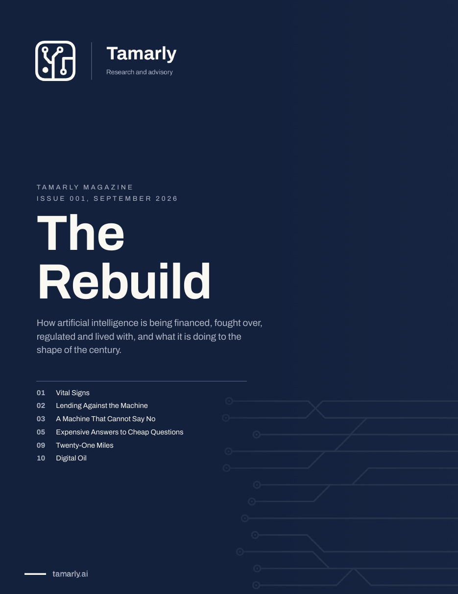

Ed.
Editorial
Everything at Once
Demographics, technology and politics are moving together. The century is being assembled out of the collision.
Twelve reports on how artificial intelligence is being financed, fought over, regulated and lived with, and what it is doing to the shape of the century.

Most coverage of artificial intelligence sells relief. A tool that solves it, a policy that settles it, a forecast that ends the argument. We think that is the wrong promise. AI is now a condition of the whole economy, and it lands on capital, on states, on classrooms and on kitchens at different speeds. This magazine reads that as one story, once a month, with the evidence attached.
Demographics, technology and politics are moving together. The century is being assembled out of the collision.
Wearables are turning into continuous health records, and the regulator is drawing the line feature by feature.
The build-out runs on debt, vendor guarantees and investors on both sides of the trade.
Chatbots are designed to keep people talking. For a small share of a very large audience, that has become dangerous.
Companies know how to deploy agents. They have not learned to say what leadership expects of them.
Autonomy makes mass cheap, and production capacity is replacing sophistication as the measure of deterrence.
An MIT study found that writing with a model cost students their memory of their own work.
Local newsrooms now bid for small-business budgets against Google, Meta and an ad-funded ChatGPT.
The fight over where the machines go is one of the few issues that crosses party lines.
The AI economy runs through a few chokepoints. The Hormuz closure showed how fast a shock travels.
A market for computing power is being built in real time, with indices, exchanges and a regulator.
China ships the volume. America raises the money. The first real price point is a used car.
Each article ends with numbered sources. Projections are labelled as projections, and quotes are attributed to the outlet that carried them.
We record the calls we make with the date they were made. When we change our view, the old entry stays visible next to the new one.
Tamarly Media publishes and holds no positions. Tamarly Capital holds positions and publishes nothing. Coverage cannot be purchased.
The Tamarly newsletter reads the week in AI, capital and geopolitics, then says what changed and what it costs. The magazine lands monthly on top of it.
No advertising in the magazine. Unsubscribe in one click.